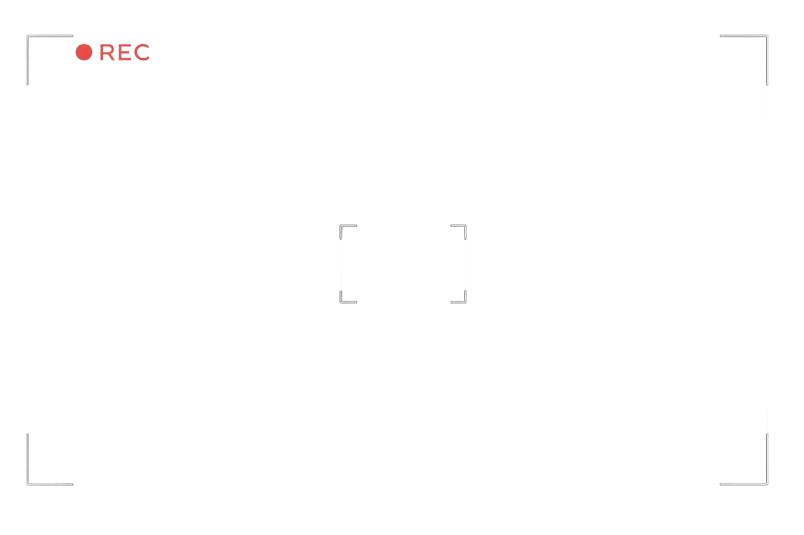
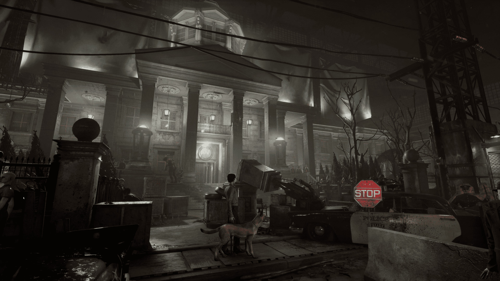
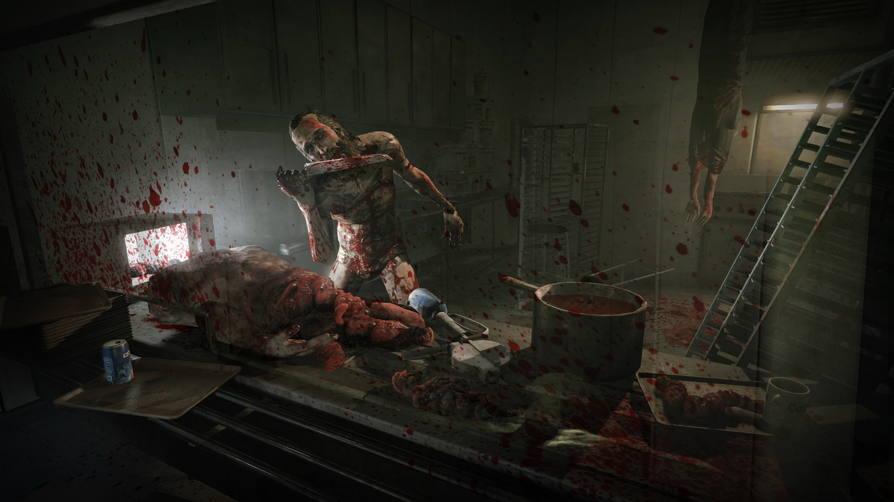
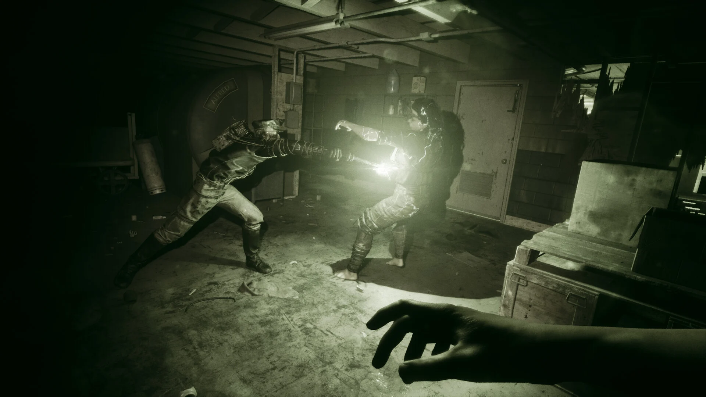
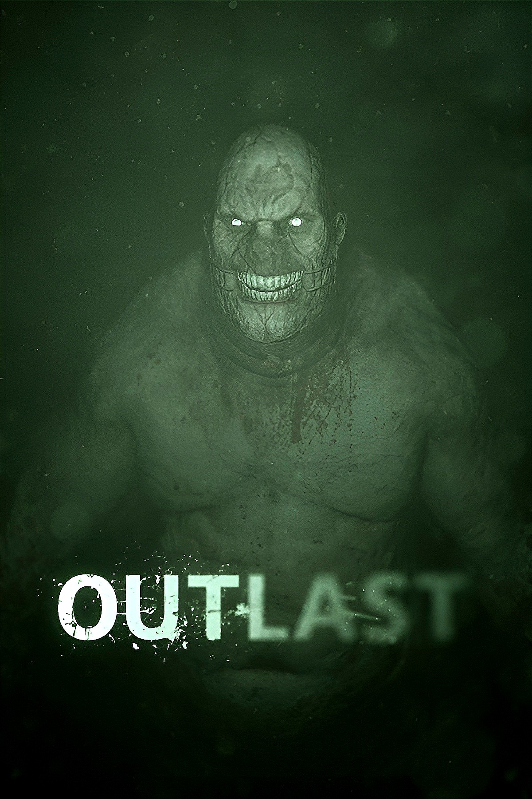
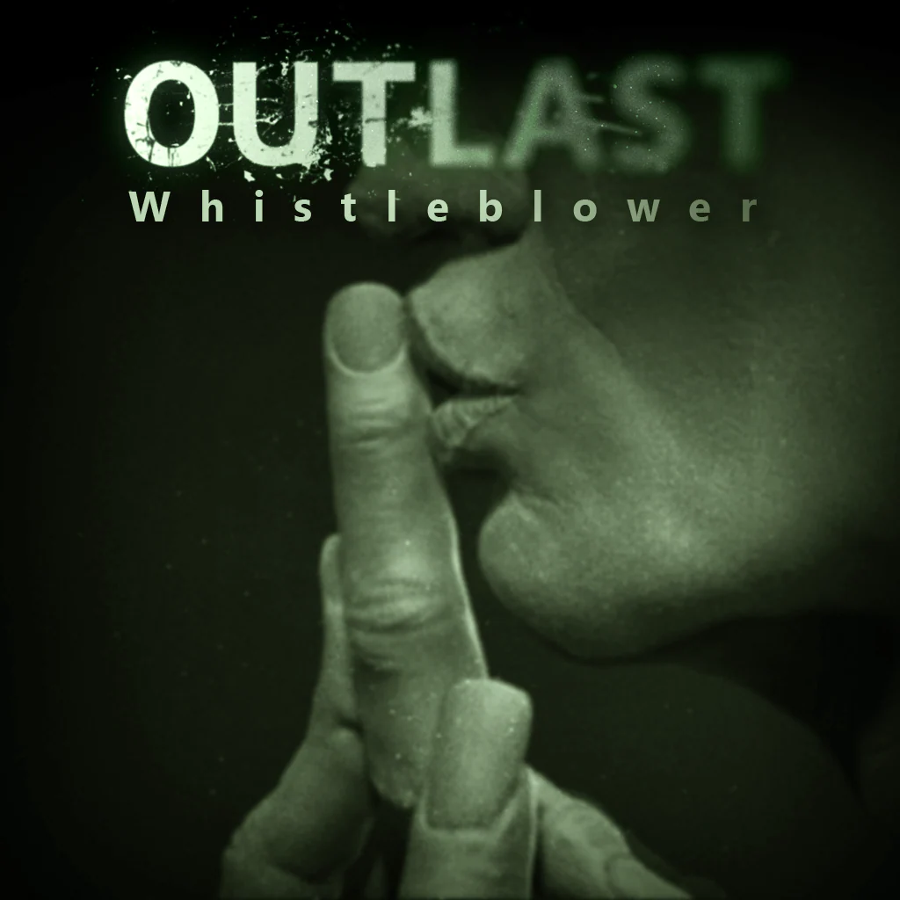
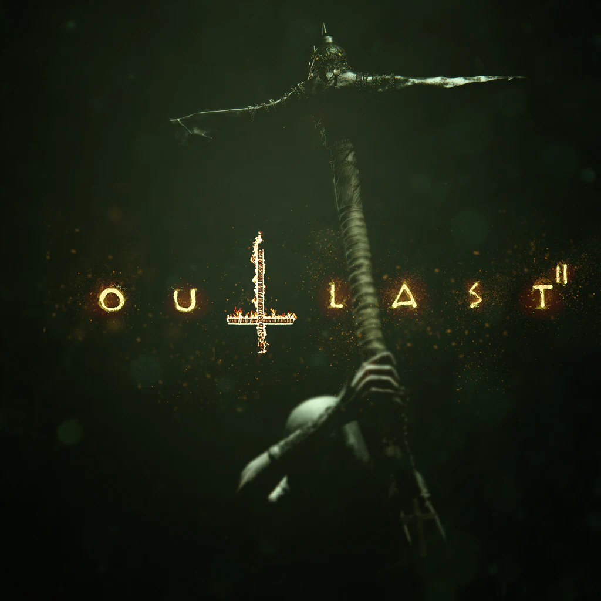
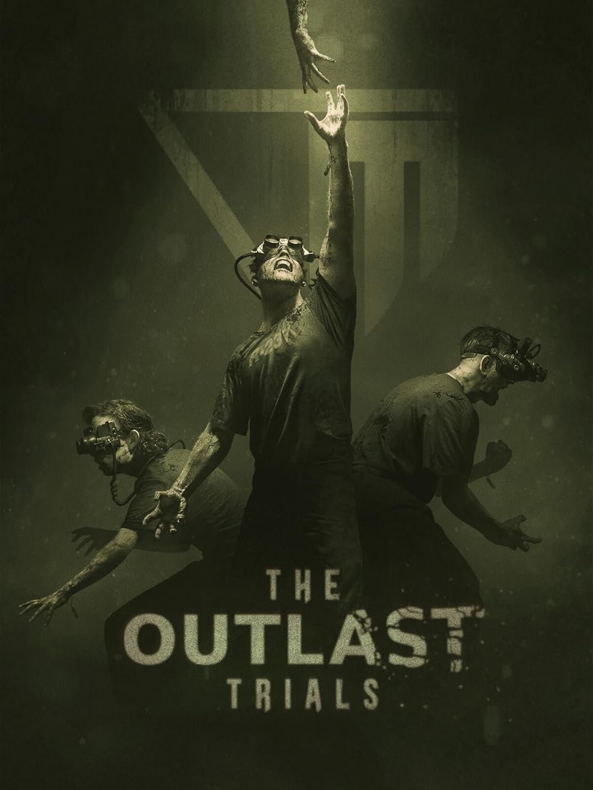

ENTRAR NO ASILO
◆ENTRAR NO ASILO
◆

12 DE MAIO, 2024A Red Barrels anunciou uma nova atualização para The Outlast Trials com novos mapas, objetivos e melhorias gerais...
LER MAIS
6 DE MAIO, 2024Uma análise profunda sobre os experimentos da Murkoff Corporation e como eles conectam todos os jogos da franquia.
LER MAIS
28 DE ABRIL, 2024Detalhes escondidos, referências e segredos que tornam Outlast uma das franquias de terror mais assustadoras.
LER MAIS
Você é o jornalista Miles Upshur, explorando o Mount Massive Asylum.
VER DETALHES
Descubra os segredos que acontecem antes dos eventos do primeiro jogo.
VER DETALHES
Siga Blake Langermann em uma jornada aterrorizante pelo deserto do Arizona.
VER DETALHES
Sobreviva aos experimentos da Murkoff em testes de programação avançada.
VER DETALHES